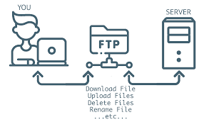

FTP is a standard network protocol used for the transfer of computer files between a client and server on a computer network.
FTP operates on the application layer of the OSI model and uses separate control and data connections between the client and server. It allows users to upload, download, and manage files on a remote server.
FTP can be used for various purposes, such as website maintenance, file sharing, and
data backup. It is commonly used by web developers to upload files to a web server and by users to download files from the internet.
FTP can be accessed using command-line interfaces or graphical FTP clients, which provide a user-friendly interface for managing file transfers.